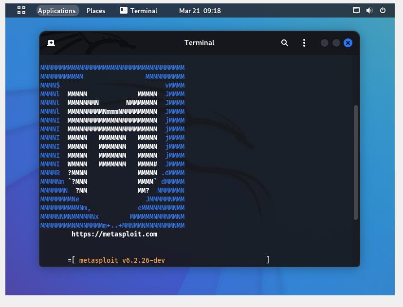

Metasploit
First of all, i use VMware workstation to create the virtual box with Kali Linux, so we can easily make our test in a safe isolated space. Also, kali Linux comes with necessary tools like penetration test tool which is our topic right now

Second stage, I opened the terminal and wrote " sudo msfdb init and msfconsole", terminal requested my password for Kaliuser to enter the Metasploit.
third stage, At first i couldnt reach main page,after few minutes i remember that i dont have necessary package for Metasploit and download them from GitHub.finally i could see the main page and ready to start my Vulnerability test.

In the fourth stage, I choose my attack type as dos/TCP/synflood and give the command to show my options. a few seconds later I could see my options.
In the fifth stage, I choose my target port as 80 and set interrupt the 45.93.124.14 ıp address, giving the command of the run to start my attack.
In the final stage, I check if i was succesful with my attcak,İ saw an empty blank page with error code.That means i was succeed my goal and intrupt that computer to reach that site.
I learn that if we can reach someones network as illegal user we can easily distrup their work.ofcourse we can reach their network if they didnt pay attention to mitigation of cyber attacks.
i did also repeat my attack to check other possiable effects and i did this.
i enter my settings for configure my attack details and this happened.